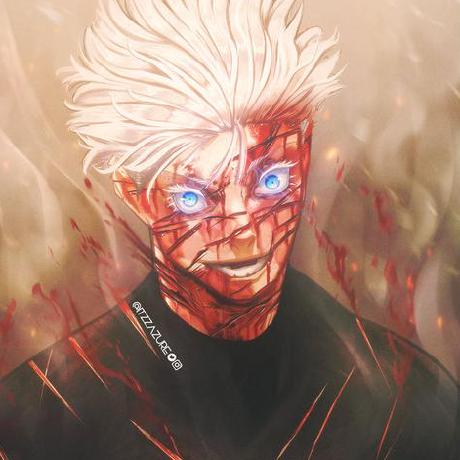

Satoru Gojo

Sobre Gojo
O feiticeiro mais forte da Terra 1°(Mais que o sukuna)
Hobbies
Treinamento de novos Alunos
Viajar pelo mundo
Aprimorar técnicas de Jujutsu
Amassar o sukuna
Poderes
O Infinito
Mugen
Lapso Azul
Lapso Reverso
Vazio Roxo
Muryo Kusho - Expansão de Dominio
Feitos
Ele se compara a 1% do Poder do Oraculo
O Goat